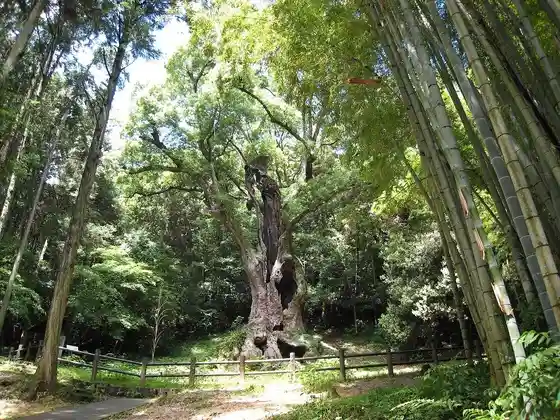
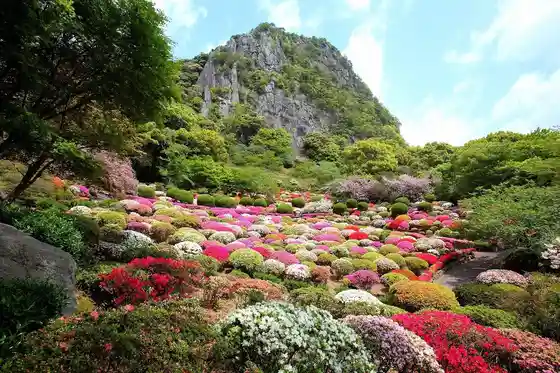
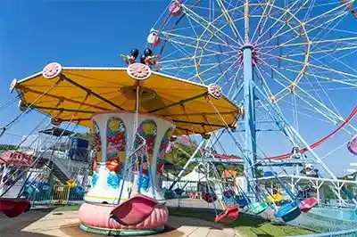

Saga Prefectural Uchu Science Museum (Yumeginga)
Takeo, Saga · 0954-20-1666 · Official / source link
Takeo Shrine Takeo no Ogusu
Takeo, Saga · 0954-22-2976 · Official / source link

Mifuneyama Rakuen
Takeo, Saga · 0954-23-3131 · Official / source link

Mori to Risu no Amusement Park Meruhen Village
Takeo, Saga · 0954-28-2835 · Official / source link

Takeo Onsen Romon
Takeo, Saga · 0954-23-2001 · Official / source link
Takeo Onsen Motoyu
Takeo, Saga · 0954-23-2001 · Official / source link
Takeo Library History Museum
Takeo, Saga · 0954-20-0222 · Official / source link
Beaato Saga
Takeo, Saga · Official / source link
Yoko Art Museum Kei Su Sono
Takeo, Saga · 0954-20-1187 · Official / source link
Kawago no Ogusu
Takeo, Saga · 0954-23-7766 · Official / source link
Takeo Onsen Shinkan
Takeo, Saga · 0954-23-2001 · Official / source link
Takeo Onsen Bussan Kan
Takeo, Saga · 0954-22-4597 · Official / source link
Athletic Resort Meritta Kid's TAKEO
Takeo, Saga · 0954-23-0175 · Official / source link
Takano Tera (Shakunage Tera)
Takeo, Saga · 0954-36-3616 · Official / source link
Roadside Station Yamauchi (Kurokami Village)
Takeo, Saga · 0954-45-6009 · Official / source link
Takeo Onsen Tonosama Yu
Takeo, Saga · 0954-23-2001 · Official / source link
OND PARK
Takeo, Saga · 0954-27-8169 · Official / source link
Experience : Tororioishii (Godofu) Tsukuri
Takeo, Saga · 0954-20-7075 · Official / source link
Takeo Onsen Hoyo Village
Takeo, Saga · 0954-20-0044 · Official / source link
Takeo Onsen Eki Tourist Information Takeo Tabi Shoten
Takeo, Saga · 0954-22-2542 · Official / source link
Takeo Kodomo Library
Takeo, Saga · 0954-20-0222 · Official / source link
Chichi Tai Bo Koen Ikoi no Plaza Campground
Takeo, Saga · 080-2157-0357 · Official / source link
Takeo Tourism Association Rentasaikuru
Takeo, Saga · 0954-22-2542 · Official / source link
Kitagata Shiki no Oka Park
Takeo, Saga · 0954-27-7501 · Official / source link
Takeo Tourism Association
Takeo, Saga · 0954-23-7766 · Official / source link
Takeo Keirinjo Park
Takeo, Saga · 0954-23-2701 · Official / source link
Tsukazaki no Ogusu
Takeo, Saga · 0954-23-9181 · Official / source link
Hiryu Kama Workshop
Takeo, Saga · 0954-27-3383 · Official / source link
Merii Land Tagaoboru
Takeo, Saga · 0954-23-4195 · Official / source link
Bizan Campground
Takeo, Saga · 0954-27-7162 · Official / source link
Mifunegaoka Umebayashi
Takeo, Saga · 0954-22-2010 · Official / source link
Baba no Yamazakura
Takeo, Saga · 0954-27-2001 · Official / source link
Daishoji (Ajisai)
Takeo, Saga · 0954-36-4934 · Official / source link
Takeo Yakusho
Takeo, Saga · 0954-23-9111 · Official / source link